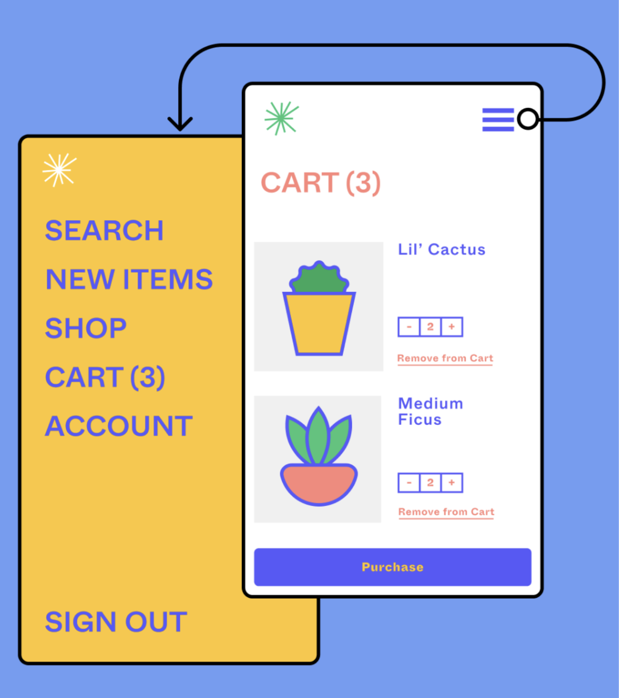

Prototyping features
Prototype while you design, and vice versa
Bring your ideas to life in animated prototypes. Test concepts earlier and more often. Create a better blueprint for development.
Get StartedPrototyping features
Bring your ideas to life in animated prototypes. Test concepts earlier and more often. Create a better blueprint for development.
Get Started